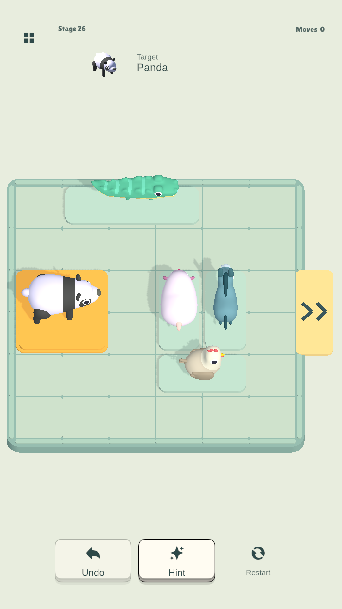
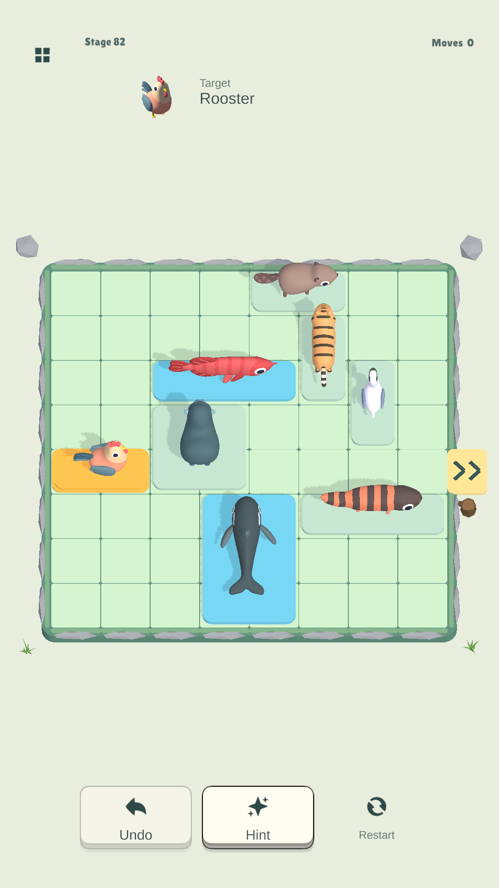
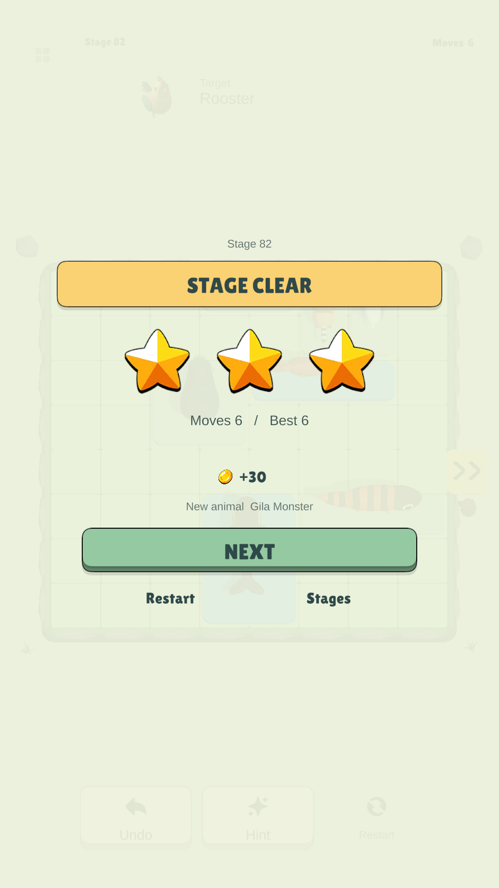
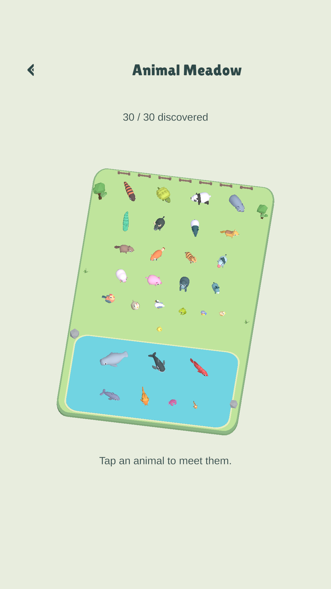

At your own pace
Regular stages
Find a path through 300 stages featuring 30 animal species. There's no timer. Solve each puzzle in fewer moves to collect stars and improve your personal best.
Animal EscapeAn animal sliding puzzle
The exit is on the right, but the other animals are in the way. Slide them aside so the panda can pass.
Android · Free · Contains ads

Touch an animal and drag it. Long animals move along their orientation. Small animals can move both across and up or down.
Push the target to the exit and it leaves on its own. Regular stages have no timer, so take a moment to work out what's blocking the path.
Undo a move whenever you need to. In regular stages and Daily Puzzles, a hint can show the next move if you're stuck.
Take your time, or put your puzzle skills against the clock.
At your own pace
Find a path through 300 stages featuring 30 animal species. There's no timer. Solve each puzzle in fewer moves to collect stars and improve your personal best.
One challenge each day
Play a date-based puzzle from a separate collection of boards. Solve today's challenge, then aim for a Perfect clear with the fewest moves.
Unlocks after clearing Stage 3.
How many can you rescue in 3 minutes?
Everyone follows the same puzzle order without hints. Boards keep coming while time remains. Each Perfect adds 3 seconds, up to 45 extra seconds per run.
Unlocks after clearing Stage 20.
Compare your Infinite Mode rescue count on the Google Play Games online leaderboard. The same puzzle order and rules give everyone the same challenge.
In-game screenshots


A long crocodile slides sideways. A large animal needs more room. Look at their shapes and decide which one should move first.
Once you've solved a stage, try again in fewer moves. Your best result stays on record alongside your stars.
There are 300 stages and 30 animal species. The animals you meet appear in your collection, and earned coins let you change the board's theme.

Watch your discovered animals wander through a meadow and pond. Pinch to zoom and drag to look around. Tap an animal to open its collection details.
Check cleared stages, stars, discovered animals, cumulative play records, and your Infinite Mode personal best. Use earned coins to change board themes and exit styles, too.
Connect to Google Play Games to back up and sync your progress. You can still enjoy the puzzles without signing in. Online rankings and cloud saves require an internet connection.
Available in English, Korean, and Japanese.
Animal Escape is available on Google Play. If you have a question or find a problem while playing, get in touch.
Contact the developer ↗